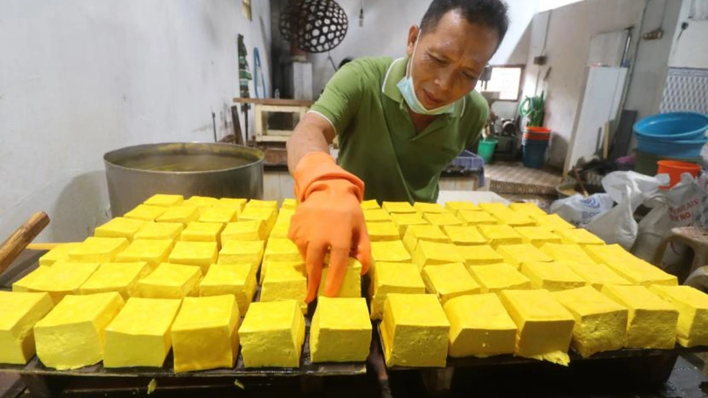

Desa wisata Kediri seperti Desa Wisata Jambu dan Kampung Tahu Tinalan mengajak pengunjung belajar pertanian, kuliner, seni, dan industri rumahan langsung dari warga setempat.
- Desa Wisata Jambu berada di Kecamatan Kayen Kidul dan memiliki 57 varietas alpukat.
- Tiket masuk Desa Wisata Jambu tercatat Rp5.000 per orang pada Januari 2026.
- Kampung Tahu Tinalan berada di Kecamatan Pesantren dan ditetapkan sebagai wisata edukasi pada 2019.
- Sekitar 34 perajin tahu tercatat berjajar di Tinalan pada laporan 2022.
- Kunjungan rombongan sebaiknya dipesan lebih dulu kepada pengelola.
DAFTAR ISI
- 1. Apa Saja Desa Wisata dan Kampung Edukasi di Kediri?
- 2. Apa yang Bisa Dipelajari di Desa Wisata Jambu?
- 3. Apa yang Bisa Dipelajari di Kampung Tahu Tinalan?
- 4. Apa yang Menarik dari Kampung Wisata Edukasi Sumber Banteng?
- 5. Bagaimana Cara Berkunjung ke Desa Wisata dengan Sopan dan Terencana?
- 6. Bagaimana Menggabungkan Desa Wisata dengan Destinasi Lain di Kediri?
- 7. Kesimpulan
- 8. FAQ
Apa Saja Desa Wisata dan Kampung Edukasi di Kediri?
Desa wisata dan kampung edukasi di Kediri meliputi Desa Wisata Jambu, Kampung Tahu Tinalan, Sumber Banteng, serta desa wisata Sempu, Bringin, dan Dawung.
Desa Wisata Jambu, Sempu, dan Bringin berada di Kabupaten Kediri. Kampung Tahu Tinalan dan Sumber Banteng berada di Kecamatan Pesantren, Kota Kediri.
Menurut detikJatim, Desa Wisata Sempu di Kecamatan Ngancar menawarkan edukasi budaya seperti gamelan, wayang kulit, dan tari Turonggo, sedangkan Desa Wisata Bringin di Dusun Purworejo menonjolkan kearifan lokal. Desa Dawung dikenal dengan waterpark dan kampung lukis.
Setiap lokasi memiliki fokus berbeda, sehingga pilihan sebaiknya mengikuti tujuan belajar. Untuk pertanian dan alam, Jambu dan Sumber Banteng lebih relevan.
Untuk industri rumahan dan kuliner, Tinalan paling sesuai. Untuk seni budaya, Sempu menjadi rujukan awal. Seluruh destinasi ini terangkum lengkap dalam panduan komprehensif wisata edukasi di daerah Kediri.
Apa yang Bisa Dipelajari di Desa Wisata Jambu?
Desa Wisata Jambu mengajarkan pertanian dan budaya lewat kebun bibit, memetik buah, menanam padi, serta karawitan, dengan tiket Rp5.000 per orang pada Januari 2026.
Good News From Indonesia pada 12 Januari 2026 menyebut desa ini berada di Kecamatan Kayen Kidul, sekitar delapan kilometer dari pusat pemerintahan Kabupaten Kediri dan sekitar 5,4 kilometer dari simpang Tugu Garuda Pare.
Aktivitas yang disebut meliputi memetik alpukat dan durian langsung dari pohon, menangkap lele, serta kunjungan kebun bibit dengan pelajaran cangkok dan buah dalam pot.
Untuk anak sekolah, tersedia kegiatan menggembala kerbau dan menanam padi di sawah. Pasar Papringan menghadirkan kuliner tradisional dan karawitan.
Desa ini buka pukul 08.00 sampai 17.00 WIB, dengan parkir Rp2.000 untuk motor dan Rp5.000 untuk mobil.
Pengelolaannya dilakukan mandiri oleh kelompok sadar wisata. Paket khusus seperti tubing memiliki tarif terpisah yang perlu ditanyakan langsung.

Aktivitas pengolahan dan pembuatan tahu tradisional di Kampung Tahu Tinalan menjadi sarana belajar industri rumahan bagi pengunjung. (Ilustrasi)Apa yang Bisa Dipelajari di Kampung Tahu Tinalan?
Kampung Tahu Tinalan di Kecamatan Pesantren mengajarkan proses pembuatan tahu takwa kuning khas Kediri, dengan sejarah produksi sejak 1954 dan penetapan wisata edukasi pada 2019.
Menurut Good News From Indonesia, Kampung Tahu Tinalan berlokasi di Tinalan Gang 4 dan sudah berproduksi sejak 1954.
Republika dan jatimnow pada 2022 mencatat 34 perajin berjajar sepanjang sekitar dua kilometer, rata-rata generasi ketiga, dengan jarak sekitar lima kilometer di timur pusat kota.
The Jakarta Post menjelaskan tahu Kediri berwarna kuning keemasan dan dikenal sebagai tahu takwa.
Secara umum, pembuatan tahu melibatkan perendaman dan penggilingan kedelai, pemasakan, penyaringan, penggumpalan, lalu pencetakan. Pengunjung dapat melihat tahapan tersebut dan bertanya kepada perajin.
Angka perajin berasal dari 2022, sehingga jumlah terbaru dapat berbeda. Hasil tahu dan olahannya juga menjadi oleh-oleh khas Kediri.
Bagi anak, ajak bertanya satu hal sederhana kepada perajin, misalnya berapa lama tahu dimasak atau bagaimana tahu dicetak. Pertanyaan semacam itu membuat kunjungan lebih interaktif dan memudahkan guru menilai pemahaman siswa.
Apa yang Menarik dari Kampung Wisata Edukasi Sumber Banteng?
Sumber Banteng di Kelurahan Tempurejo, Kecamatan Pesantren, dikembangkan sebagai kampung wisata edukasi lewat penghijauan, edukasi lingkungan, dan penangkaran kambing sebagai wahana belajar.
Proceeding Universitas Nusantara PGRI Kediri edisi Februari 2026 melaporkan program penataan lingkungan, penghijauan, penangkaran kambing interaktif, serta penyediaan denah spot wisata di kawasan mata air ini.
RRI Kediri pada 11 Juli 2026 juga memberitakan keindahan aliran sungainya sebagai daya tarik.
Bagi keluarga, lokasi ini cocok untuk belajar tentang mata air, penghijauan, dan hewan ternak. Karena pengembangannya masih berjalan, fasilitas dan aturan dapat berubah sehingga perlu dikonfirmasi saat akan berkunjung.
Bagaimana Cara Berkunjung ke Desa Wisata dengan Sopan dan Terencana?
Berkunjung ke desa wisata dilakukan dengan menghubungi pengelola lebih dulu, menghormati warga, mengikuti arahan pemandu, menjaga kebersihan, dan membawa uang tunai secukupnya.
Hubungi pengelola atau kelompok sadar wisata untuk menanyakan paket, kapasitas, dan tarif rombongan.
Gunakan pakaian dan alas kaki yang sesuai untuk kebun, sawah, atau sungai.
Minta izin sebelum memotret warga atau proses kerja di rumah produksi.
Bawa kantong sampah sendiri dan jangan meninggalkan sisa makanan.
Beli produk lokal, misalnya tahu atau kuliner desa, sebagai bentuk dukungan nyata.
Pada hari libur, datang lebih pagi untuk menghindari keramaian dan bawa pakaian ganti bila berencana mencoba kegiatan air.
Desa wisata yang terdata resmi dapat dicek melalui Jadesta Kemenparekraf, sumber informasi desa wisata dari pemerintah.
Bagaimana Menggabungkan Desa Wisata dengan Destinasi Lain di Kediri?
Desa wisata paling nyaman dipadukan dengan satu destinasi lain yang berdekatan, misalnya Kampung Tahu Tinalan bersama museum atau taman di Kota Kediri.
Kampung Tahu Tinalan mudah digabung dengan kunjungan ke Kediri Eco Park di panduan wisata edukasi anak di Kediri untuk liburan keluarga atau Museum Airlangga di wisata sejarah di Kediri dari museum hingga candi. Desa Wisata Jambu lebih baik dijadwalkan sebagai agenda utama satu hari karena aktivitasnya membutuhkan waktu.
Kesimpulan
Desa wisata Kediri menawarkan pelajaran nyata tentang pertanian, industri rumahan, dan seni lokal.
Pilih Desa Wisata Jambu untuk kebun dan sawah, Kampung Tahu Tinalan untuk proses pembuatan tahu, serta Sumber Banteng untuk edukasi lingkungan.